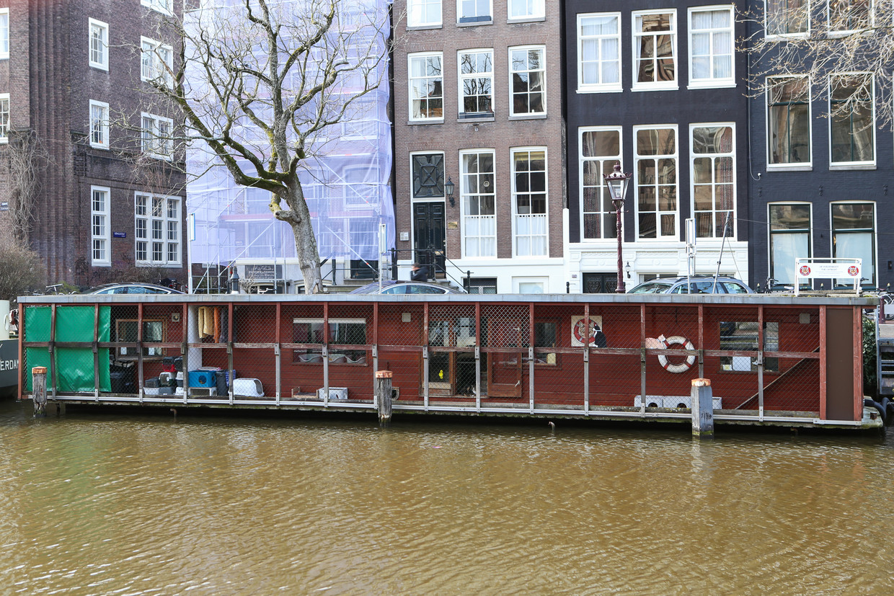

Duurzaamheid
Je vraagt je misschien af hoezo is dit een duurzaam project. Dat zal ik u hier uit leggen. de katten die zich bevinden op de poezenboot komen van straat af. Dit kunnen katten zijn die altijd al op straat hebben geleefd. Of die daar sinds kort zich bevinden. Deze katten worden geholpen aan een nieuw leef met een baasje en een warm huis. De levens van de katten worden als ware gerecyceld. Ook is de Poezenboot zelf duurzaam. Het draait volledig op donaties en vrijwilligers. En al het verdiende geld gaat terug de boot in. Die net met een verbouwing bezig is voor zonnepanelen. Hierdoor is het een duurzaam Project en voor mileu erg goed.